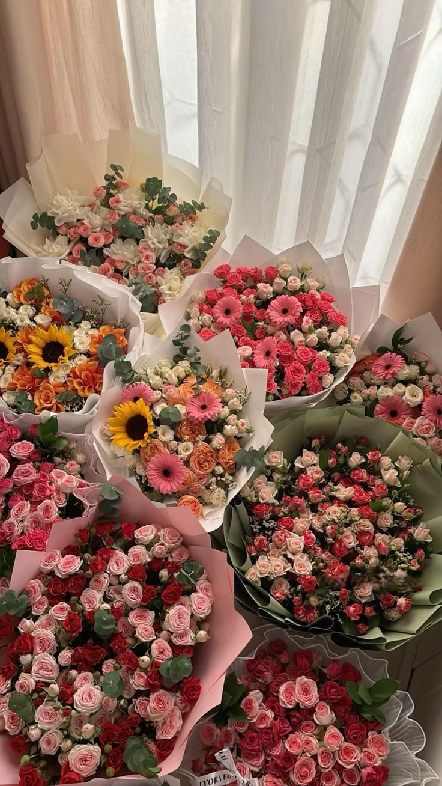
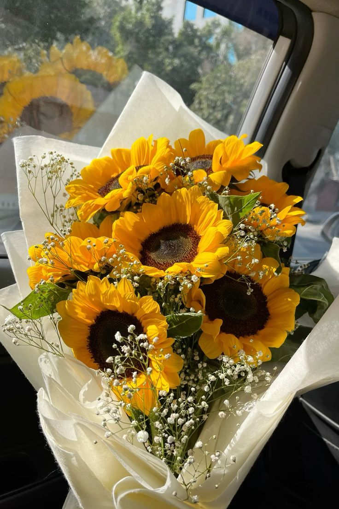
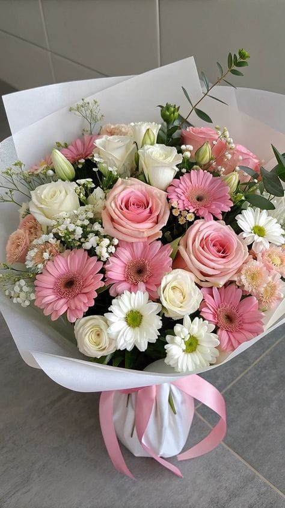
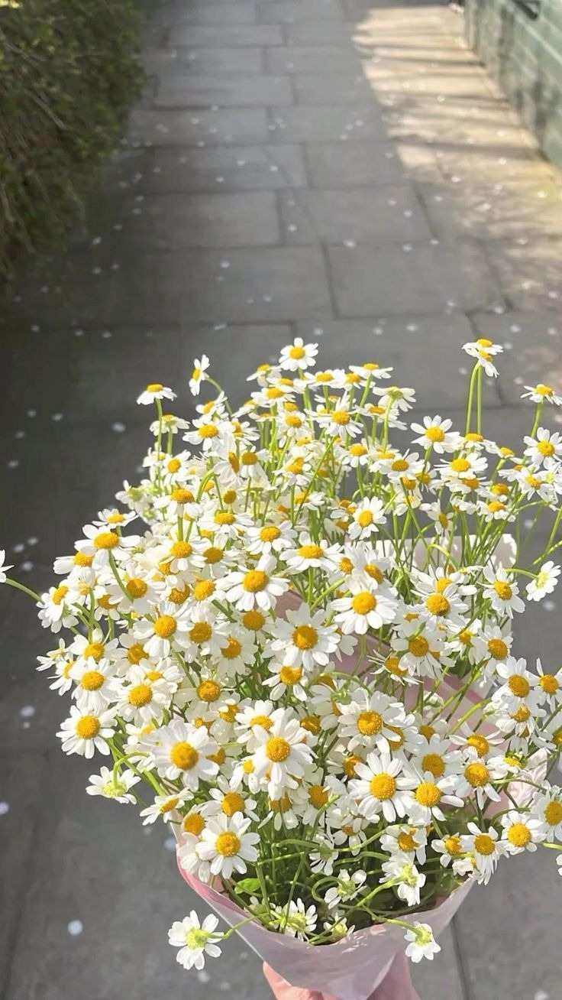

About BloomSense
Every Flower Has A Meaning.
BloomSense is a flower discovery and gifting platform created around one simple thought — what if the flower we give could say what we are unable to say ourselves?
Flowers have always been more than beautiful gifts. They can carry emotions, memories, affection and messages. BloomSense brings that meaning into the process of choosing, sending and receiving flowers.
Discover the meaning behind flowers, find one that matches a person or occasion, understand a flower you've received, and make every floral gesture a little more personal.

Our Story
BloomSense began with a simple observation.
The flower-gifting world is growing, and flowers are becoming an increasingly popular way to celebrate relationships, occasions and emotions. But while choosing a flower may be easy, choosing the right flower can be surprisingly difficult.
We often know what we want to express — love, gratitude, admiration, comfort or affection — but we don't always know how to put those feelings into words.
BloomSense was created from that thought. Instead of choosing a flower simply because it looks beautiful, we wanted people to be able to choose one because it represents something about the person receiving it.

What is BloomSense?
With BloomSense, you can easily discover and express emotions through these features:
Buy My Flower
Explore flowers, discover their meanings and choose the way you want to send them.
Help Me Find My Flower
Answer a few simple questions to discover a bouquet that feels right.
Received A Flower
Enter the flower you received to discover what it represents.
Birth Flower
Select a month to discover its associated birth flower symbolism.
BloomSense brings technology, flowers and personalization together to make giving and receiving flowers more meaningful.

How Flower Meanings Work
Flowers have been associated with emotions and symbolism for centuries. Different flowers, colours and traditions have developed their own meanings, allowing flowers to communicate feelings without words.
BloomSense takes inspiration from the tradition of floriography, or the language of flowers, particularly the Victorian-era tradition in which flowers were used to express messages and emotions.
A flower can represent feelings such as:

BloomSense uses these symbolic associations as inspiration to help people make more thoughtful and personal choices when giving flowers.
Why We Created BloomSense
We created BloomSense because choosing a flower should not have to be a guessing game.
People often want to give flowers to someone they love, but they may not know:
- Which flower to choose
- What different flowers mean
- Which flower suits a particular person
- How to make a simple gift feel more personal
- How to express a feeling without saying it directly
We wanted to combine technology, personalization and the emotional language of flowers to create a gifting experience where the flower itself becomes part of the message.
Our Mission
We want to make the everyday experience of sending and receiving flowers more meaningful, emotional and personal. BloomSense believes that sometimes, you don't need more words. You just need the right flower.